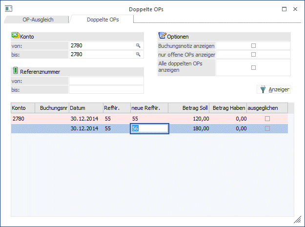
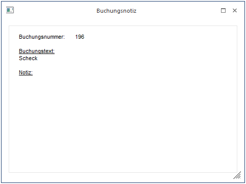
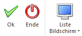

In dieser Funktion können Sie - versehentlich - mehrmals verwendete Referenznummern neu benennen, um Verwechslungen beim Ausziffern der Sach-OPs zu vermeiden.

Ø Konto von - bis
Hier können Sie die Ausgabe auf die Kontonummer eingrenzen.
Ø Referenznummer von - bis
Eingrenzung der Anzeige über die Referenznummer der Sach-OP.
Ø Buchungsnotiz anzeigen
Ist diese Checkbox aktiv, wird ein Notiz-Info-Fenster mit den im Formular definierten Infos zur aktuell ausgewählten OP-Zeile angezeigt.

Ø nur offene OPs anzeigen
Nach Aktivieren der Checkbox und bestätigen des Buttons "Anzeigen" werden nur mehr die noch nicht ausgezifferten Sach-OPs angezeigt.
Ø Alle doppelten OPs anzeigen
Nach Aktivieren dieser Checkbox und bestätigen des Buttons "Anzeigen" wird beim Füllen der Tabelle nicht nur auf der "Fakturen-Seite" (d.h. im Soll, wenn im Konto "OP im Soll" definiert ist bzw. umgekehrt im Haben), sondern auch auf der "Zahlungen-Seite" geprüft, ob es doppelte Einträge gibt
Soll nun eine Referenznummer nachträglich neu zugeordnet werden (da z.B. versehentlich 2x dieselbe Referenznummer beim Buchen eingegeben wurde oder in einem Stapel importiert wurde), aktivieren Sie die OP-Zeile die erhalten bleiben soll und korrigieren die Referenznummer, die Sie ändern möchten in der Spalte "neue RefNr.". Es kann immer nur EINE OP-Zeile auf einmal geändert werden (hätte man also 3x dieselbe OP-Nummer vergeben, müsste man 2 Läufe dafür machen).
Wurde einmal versehentlich eine Referenznummer geändert, können Sie mit der F3-Taste die ursprüngliche Referenznummer wieder zurückholen.
Buttons

Ø OK
Nach Bestätigen des OK-Buttons werden die Werte gemäß der
Eingabe im Datenstand korrigiert.
Ø Ende
Nach Drücken der Ende-Taste oder der ESC-Taste wird das Fenster geschlossen.
Ø Liste Bildschirm
Über den Button Liste Bildschirm/Drucker können Sie die wahlweise über Bildschirm oder Drucker die Liste der doppelten OPs ausgeben.